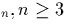
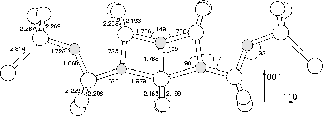

This structure is a direct analogue of the (CH)i-O4i shallow thermal donor defect, with the (CH)i unit replaced by a single trivalent Oi atom, forming O5i. The two outer atoms provide compression, which stabilises an inner core of three O atoms, all of which are to varying degrees tri-valent. A central lattice Si atom sits at the defect core and is between 3- and 5- valent depending on the definition of a bond in this core. Since this has Oi on the C2 axis it can only be a potential model for TD1 or TD2 since ENDOR shows TD3 and above have no Oi on the C2 axis.
The resultant structure is largely C2v and very similar to that
of the shallow thermal donor structure, (CH)iO4i (see
Figure 9.11). There is slight deviation from C2v in
that the two roughly tri-valent oxygen atoms either side of the core
(B and C) move 0.01 Å out of the defect plane in the same
direction. The core O atom remains, to within 0.005 Å, on the
C2 axis. It is compressive along  001
001 and tensile along
and tensile along
 110
110 .
.
The structure breaches ENDOR observation [231,10] that the higher TDs (TD) have no oxygen on the C2 axis, and in addition have two shells of oxygen atoms around the core (this defect displays three: the core O atom, the next roughly tri-valent O atoms, and then the outer O atoms). However this does not necessarily exclude the model since EPR has previously been unable to detect light element impurities lying on the C2 axis of a defect (e.g. Ci- [264]), and so it may be that the core O atom is invisible to this method.
The Kohn-Sham eigenvalues for this structure are given in Figure 9.10e, scaled to the experimental Si band gap of 1.16eV. Since the defect is +2 charged the shallow donor level is empty.
|  |
| 3cLocal Vibrational Modes (cm-1) | Dipole moment squared | ||
| 16O | 17O | 18O | for 16 O |
| 1644.1 | 1604.8 | 1569.2 | 0.386 |
|---|---|---|---|
| 1092.3 | 1067.0 | 1044.1 | 0.024 |
| 1081.3 | 1057.2 | 1035.2 | 0.407 |
| 1002.9 | 975.3 | 950.2 | 0.006 |
| 972.2 | 946.4 | 923.1 | 0.004 |
| 921.2 | 898.2 | 877.5 | 0.315 |
| 892.5 | 870.6 | 850.8 | 0.002 |
| 860.7 | 839.5 | 820.4 | 0.039 |
| 850.5 | 832.3 | 815.9 | 0.417 |
| 826.3 | 805.8 | 787.3 | 0.012 |
| 825.9 | 804.5 | 784.9 | 0.018 |
| 739.5 | 739.0 | 738.3 | 0.001 |
| 653.9 | 650.3 | 647.2 | 0.099 |
This thermal donor model produces a number of vibrational modes, and these are shown in Table 9.3. Altogether there are four strong modes, one much higher than any experimentally observed values. The two central ones straddle the experimental figure, and both give reasonable isotope shifts. Experimentally the isotope shift from 16O to 18O is 44 cm-1, for the 1081 cm-1 mode it is 46 cm-1 and for the 921 cm-1 mode it is 44 cm-1. The existance of four modes with one of those extremely high does not provide good agreement with experiment, and the lower 850 cm-1 mode is a long way from the experimental lower frequencies of the TDs at 716-748 cm-1. This therefore probably rules it out as a candidate for the thermal donors, in conjunction with its breach of ENDOR observation. This could be confirmed by examination of experimental FTIR spectra in the higher 1300-1700 cm-1 frequency region, where this model predicts an absorption. The two highest modes of this model are caused by out-of-plane wag motion of the core O, and its two O neighbours respectively; it is unusual for wag modes to have such high frequencies, and further investigations are required to ensure this is not simply a basis effect. By analogy to the dimer, the 917 cm-1 mode is an extremely coupled relation to the asymmetric stretch mode, and the 849.2 cm-1 mode is similar to the symmetric stretch.
In light of the poor LVMs and disagreement with ENDOR we therefore exclude this structure as a model for any TDs above TD2, and probably also as a model for TD1 or TD2.